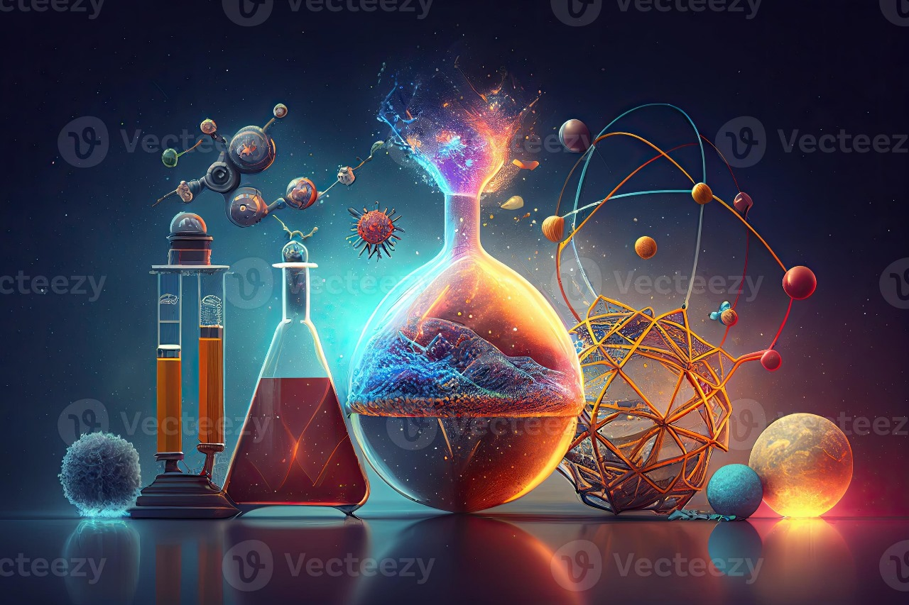

Applications de SuperIA

Médecine
SuperIA accélère la découverte de traitements personnalisés en analysant des ensembles de données complexes et en identifiant des modèles subtils dans les diagnostics médicaux.

Science
SuperIA facilite la résolution de problèmes complexes dans le domaine de la recherche scientifique et contribue à des avancées majeures dans divers domaines scientifiques.
Industrie
SuperIA révolutionne l'automatisation industrielle en concevant des systèmes intelligents capables d'améliorer l'efficacité des processus de production et de minimiser les erreurs.